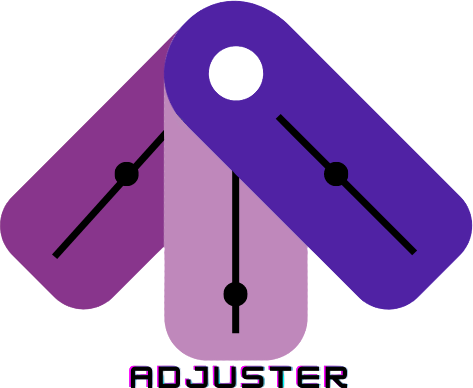
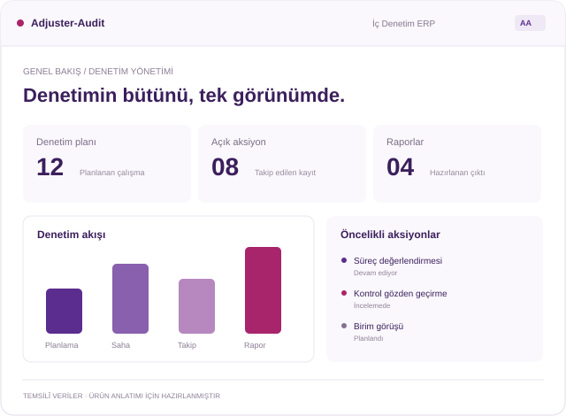
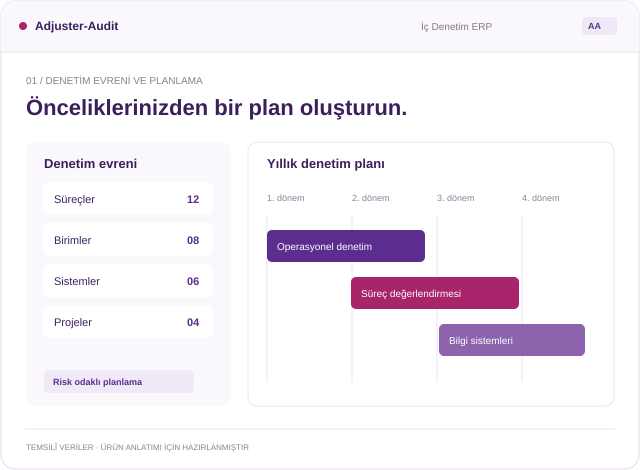
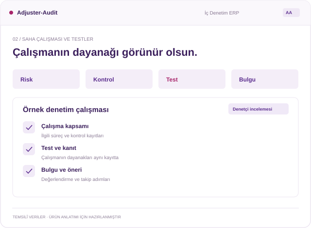
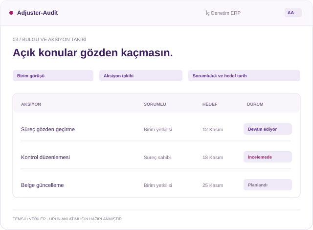
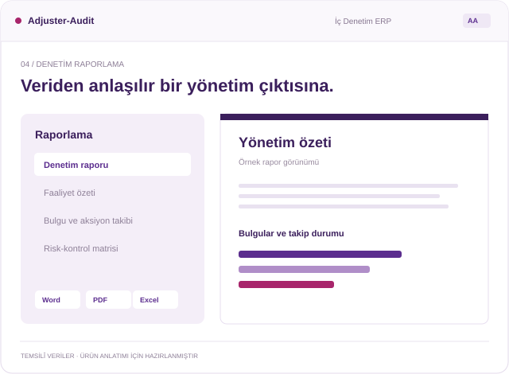
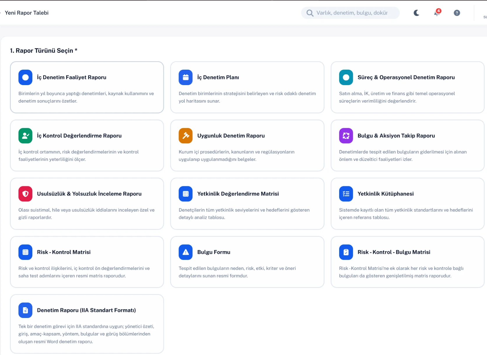

Öncelikleriniz netleşsin.
Denetim evreninizi ve risklerinizi birlikte değerlendirerek planlama kararlarınızı destekleyin.
YAPAY ZEKÂ DESTEKLİ İÇ DENETİM ERP
Planlama, saha çalışması ve bulgu takibini birleştirin. Kurumunuzun donanımına uygun yapay zekâ seçenekleriyle bilgiye ulaşın, değerlendirmelerinizi destekleyin ve denetimin bütününü görün.


Planlayın. Bağlantıyı koruyun.
Denetimin bütününü görün.
DAHA NET BİR BAKIŞ
Planlar ayrı dosyalarda, bulgular farklı tablolarda, aksiyonlar e-postalarda kaldığında bütünü görmek zorlaşır. Adjuster-Audit, ekiplerin aynı bilgi üzerinden çalışmasına yardımcı olur.
Denetim evreninizi ve risklerinizi birlikte değerlendirerek planlama kararlarınızı destekleyin.
Test, kanıt ve bulgular arasındaki bağlantıyı koruyun. Denetim kayıtlarını ortak bir yapıda tutun.
Sorumluları, hedef tarihlerini ve açık konuları görün. Görüşmelerinizi güncel bilgiyle yürütün.
ADJUSTER-AUDIT / YAPAY ZEKÂ MODÜLÜ
Mevzuatınız, prosedürleriniz ve geçmiş bulgularınız günlük denetim çalışmasının bir parçası olsun. İlgili bilgiye ulaşın, değerlendirmelerinizi destekleyin ve hazırlık çalışmalarınızı kurumunuzun birikimiyle ilerletin.
İki çalışma modunu keşfedinKurumunuzun altyapısında. Denetçinizin kontrolünde.Donanımınıza ve ihtiyaçlarınıza uygun iki çalışma modu.
Kaynağa dayalı destek
LLM destekli taslaklar
ALTYAPINIZA UYGUN YAPAY ZEKÂ
Standart sunucular için bilgi ve analiz desteği; GPU altyapısı için üretken yapay zekâ. İhtiyacınız olan yetenekleri, kurumunuzun olanaklarıyla birlikte değerlendirin.
Mevcut altyapınızla bilgiye dayalı denetim desteği.
GPU gerektirmeyen yapısıyla, uygun kapasitedeki standart kurum sunucularında çalışır. Kurum kaynaklarına dayalı bilgi erişimini ve makine öğrenmesi destekli analizleri denetim ekibinizin kullanımına sunar.
RAG tabanlı bilgi erişimi
Makine öğrenmesi (ML)
Kimin için? GPU yatırımı yapmadan kurum bilgisini denetim çalışmalarında kullanmak isteyen ekipler.
Kurum bilginizden analiz, özet ve öneri taslaklarına.
GPU altyapısında çalışan büyük dil modeli (LLM), kurum kaynaklarına dayalı bilgi erişimini üretken yapay zekâ ile birleştirir. Denetçinin hazırlık çalışmalarını, bağlama uygun taslaklarla destekler.
Kaynaklara dayalı bilgi erişimi (RAG)
Büyük dil modeli (LLM)
Kimin için? GPU altyapısıyla üretken yapay zekâyı denetim hazırlıklarına katmak isteyen ekipler.
Uygun modu; sunucu kapasiteniz, belge hacminiz ve kullanım yoğunluğunuzla birlikte belirleyelim.
Yapay zekâyı demoda inceleyinRİSKTEN RAPORA / DENETİM DÖNGÜSÜ
Planlamada oluşan bilgi saha çalışmasına, bulgular takibe, sonuçlar raporlamaya taşınır. Denetiminizi baştan sona aynı yapı üzerinden yönetin.
Denetlenebilir birim, süreç, sistem ve projelerinizi tanımlayın. Risk değerlendirmelerini yıllık planınızla ilişkilendirerek kapsamı ve kaynakları birlikte görün.

Riskleri, kontrolleri, testleri ve kanıtları ilgili denetimle birlikte yönetin. Bulgularınızı yapılandırılmış kayıtlar üzerinden hazırlayın; inceleme ve onay adımlarını takip edin.

Birim Portalı üzerinden görüş ve aksiyon paylaşımını yürütün. Açık konuları, yaklaşan hedef tarihlerini ve gecikmeleri izleyerek sürecin devamlılığını sağlayın.

Denetim sonuçlarını ve takip bilgilerini yapılandırılmış raporlarla sunun. Word, PDF ve Excel çıktılarıyla inceleme, paylaşım ve analiz ihtiyaçlarınızı destekleyin.

Süreç ilerler. Bilgi aynı yapıda kalır.
ORTAK BİR SÜREÇ / FARKLI SORUMLULUKLAR
Denetim ekibi ve denetlenen birimler, görevlerine uygun kapsamlarla aynı süreçte buluşur. Bilgi paylaşımı ve sorumluluklar görünür hâle gelir.
Denetim öncelikleri ile yürütülen çalışmaları ilişkilendirin.
İş yükü ve kapasiteyi birlikte değerlendirin.
Açık bulguları, aksiyonları ve raporları izleyin.
Risk, kontrol, test ve bulgu ilişkisini görün.
Kurum belgelerinden ve yapay zekâ taslaklarından yararlanın.
Çalışmalarınızı onay ve raporlama adımlarına taşıyın.
Çalışma alanınıza ait kayıtlarla ilgilenin.
Denetim ekibiyle görüşlerinizi aynı kayıt üzerinden paylaşın.
Sorumluluk ve hedef tarihleri birlikte izleyin.

Raporlama seçeneklerini yakından inceleyin Mevcut uygulamadan alınan raporlama ekranı.KAYITTAN KARARA
Denetim raporlarından faaliyet özetlerine, risk-kontrol matrislerinden aksiyon takip çıktılarına kadar farklı ihtiyaçları tek sistem üzerinden karşılayın.
Yönetime sunacağınız bilgiyi denetim kayıtlarıyla bağlantılı olarak hazırlayın. İnceleme, paylaşım ve analiz için uygun formatı seçin.
4DIMENSION İLE
Dijital dönüşüm, bilgi güvenliği ve uyum alanlarındaki yaklaşımımızla; iç denetimi kurumunuzun süreçleriyle birlikte ele alıyoruz.
Denetim yapınızı, ekiplerinizi ve önceliklerinizi birlikte değerlendirelim.
Sizin için önemli olan planlama, yürütme ve takip akışlarını üründe görün.
Kurulum, uyarlama ve donanımınıza uygun yapay zekâ modunu birlikte netleştirelim.
AKLINIZDAKİ SORULAR
Kurumunuza özel sorularınızı ürün görüşmesinde birlikte değerlendirebiliriz.
Bizimle görüşünAdjuster-Audit, iç denetim faaliyetlerini planlama, yürütme, bulgu ve aksiyon takibi ile raporlama aşamalarında bir araya getiren, yapay zekâ destekli bir İç Denetim ERP yazılımıdır.
İç denetim süreçlerini ortak bir yapı üzerinden yönetmek isteyen kamu kurumları ve şirketlerin ekiplerine yöneliktir. Denetim yöneticileri, denetçiler ve denetlenen birimler görevlerine uygun kapsamlarla çalışabilir.
Denetim ve risk evreni, yıllık planlama, saha çalışmaları, testler, bulgu ve öneriler, birim iletişimi, aksiyon takibi ve raporlama ürünün temel kapsamındadır.
Mod 1 için GPU gerekmez. Uygun kapasitedeki CPU tabanlı standart sunucuda, RAG tabanlı bilgi erişimi ve makine öğrenmesiyle çalışır. LLM destekli üretken yapay zekâ yetenekleri sunan Mod 2, GPU altyapısı kullanır. Sunucu uygunluğunu belge hacmi ve eşzamanlı kullanım ihtiyacınızla birlikte değerlendiririz.
Mod 1, kurum kaynaklarından bilgiye erişim, kaynak metne dayalı cevaplar ve makine öğrenmesi destekli analizlere odaklanır. Mod 2, büyük dil modeli (LLM) desteğiyle analiz, özet ve öneri taslakları üretir. Her iki modda da çıktıların değerlendirilmesi ve nihai onay denetçidedir.
Hayır. Yapay zekâ, seçilen moda göre bilgi erişimi, analiz veya taslak hazırlığıyla denetçiyi destekler. Kaynakların ve çıktıların değerlendirilmesi, nihai karar ve onay yetkili kullanıcılardadır.
Sisteme eklenen mevzuat, prosedür ve geçmiş bulgulardan yararlanılabilir. Sonuçlar yüklenen kaynakların kapsamına bağlıdır; kullanıcı kaynak atıfları üzerinden dayanakları inceleyebilir.
Kurum içi kurulum yaklaşımı desteklenir. Altyapı, yapay zekâ bileşenleri ve kapasite ihtiyaçları kurumunuzun koşullarına göre teknik değerlendirmede belirlenir.
Raporlama ihtiyaçlarına göre Word, PDF ve Excel çıktıları alınabilir. Kullanımınıza uygun raporları demoda birlikte inceleyebiliriz.
ADJUSTER-AUDIT İLE TANIŞIN
Ürünün kurumunuzdaki denetim akışına nasıl uyarlanabileceğini görün. Denetim süreçlerinizi ve altyapınıza uygun yapay zekâ modunu birlikte değerlendirelim.
Demo talebinizi iletin; ekibimizle uygun kapsamı birlikte belirleyin.
Demo talebini oluşturun (yeni sekmede açılır)Adjuster demo talep sayfası yeni sekmede açılır.